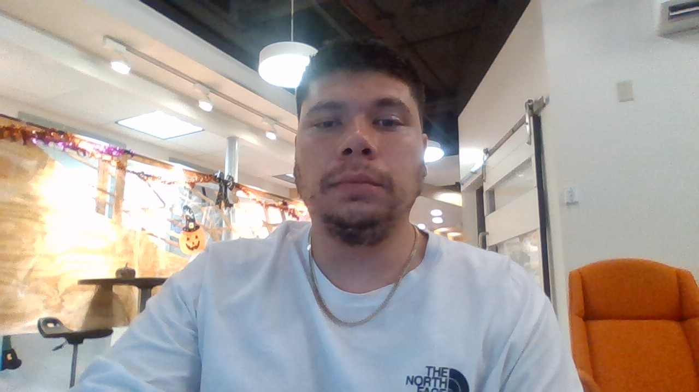
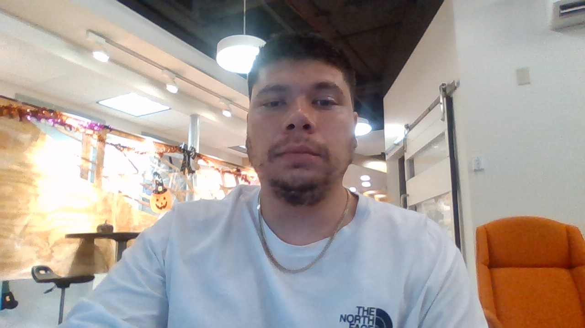
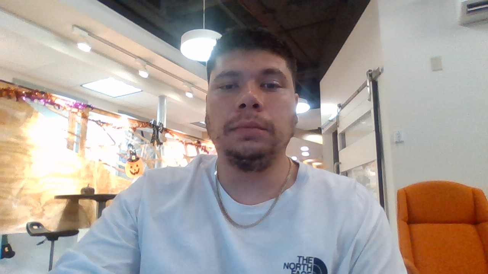

I was born and raised in Albuquerque and currently reside with my wife and our 5 kids. I enjoy cooking in my spare time and would eventually like to open a food truck selling french toast.
I also enjoy creating music. My favorite instrument is the banjo, although I also play the accordion.
Prior to taking this course I was a 911 dispatcher for 6 years with APD. I enjoyed the job but not the stress. I am looking for a new path to a rewarding career.
I was excited to find this Bootcamp since I will get out in time for my side-gig as Santa Clause at the mall. My favorite part is promising the kids that I will bring them everything on their wish lists.
